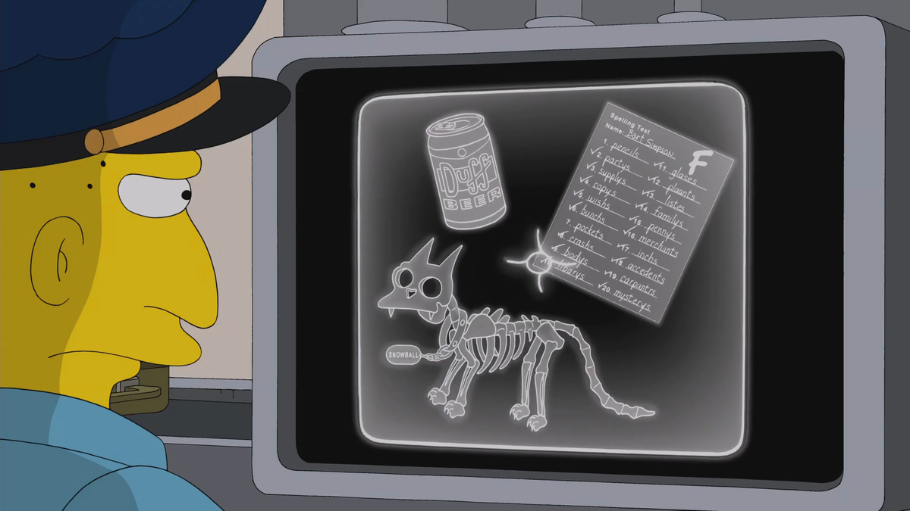

Snowball (a.k.a. Snowball I) was the first cat owned by Lisa. He was followed by Snowball II, Snowball III, Snowball IV and Snowball V. He was the family's first pet, followed by Snowball II and Santa's Little Helper.
Snowball died at some point in the past. She is mentioned occasionally and sometimes seen in flashbacks, but never made any physical appearance on the show itself, as she died sometime prior to the start of the series.
Snowball I's burial spot has not been consistent. Sometimes she is depicted as being buried in the Springfield Pet Cemetery, located next to Antonio's Ice Palace. In one episode, however, she is buried in the Simpsons' backyard, next to all of their various other dead kitties.
